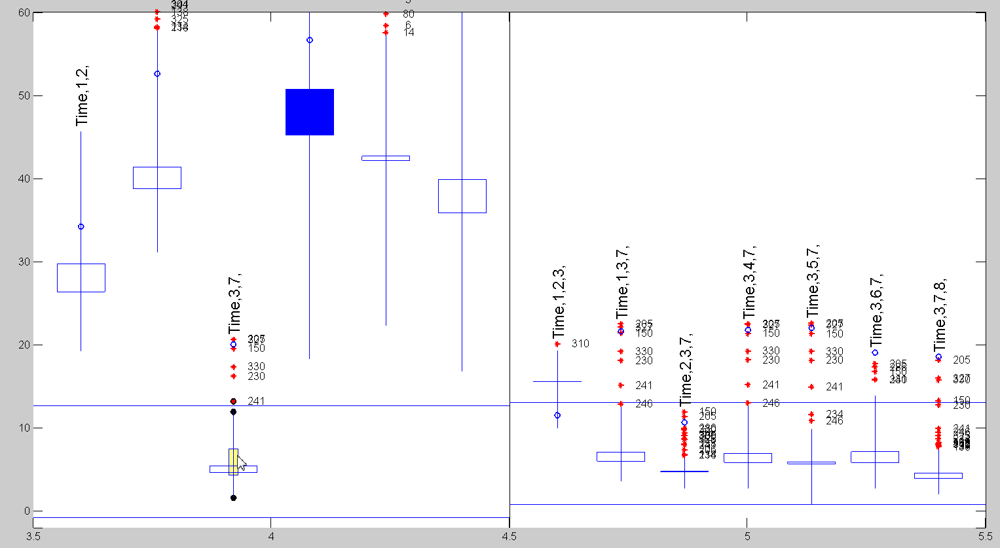
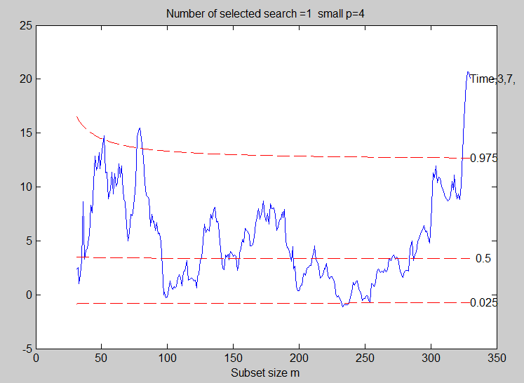
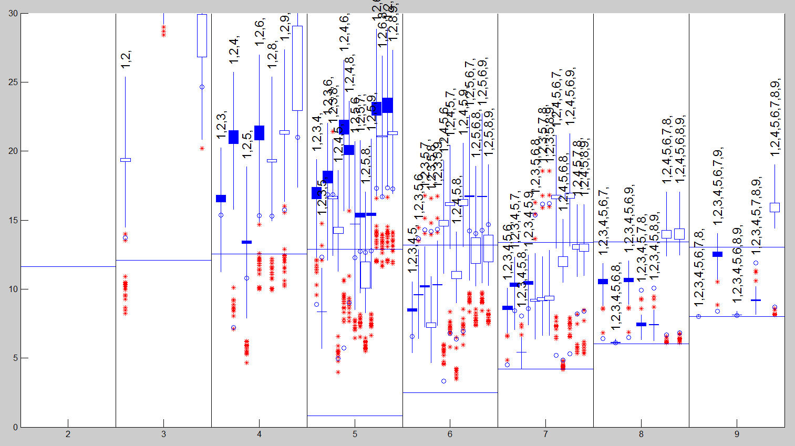
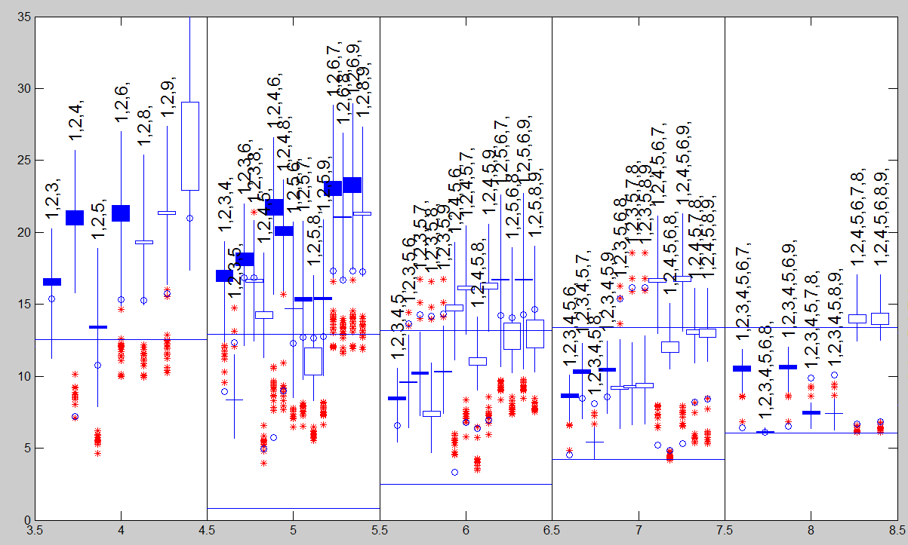
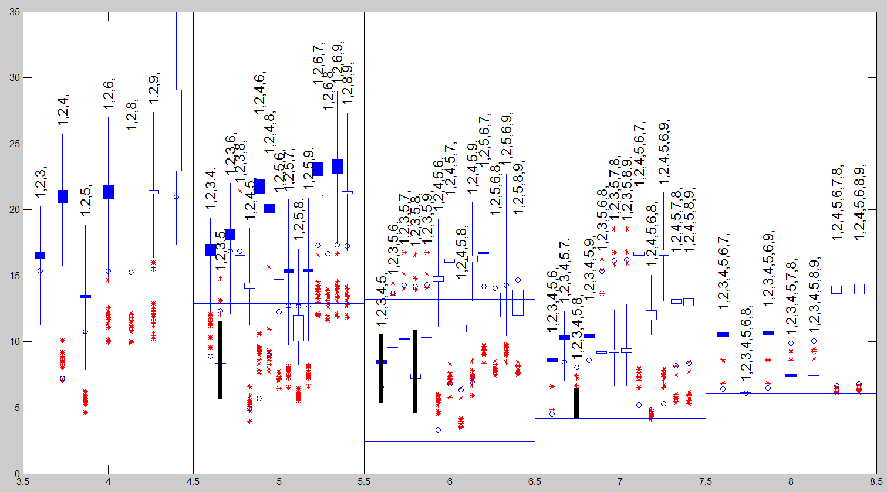

| Flexible Statistics Data Analysis Toolbox™ |
|
Candlestick plot for robust model selection in linear regression
cdsplot(out)
cdsplot(out,param1,val1,param2,val2,...)
A powerful graphical tool to perform model selection in regression is the generalized candlestick plot which summarises the information on forward searches and model choice for numerous models using a flexible level of trimming. The candlestick plot summarises, for each model, the information in the trajectory of the forward plots of Cp(m). The starting point is the “candlestick” plot used to summarise such quantities as the high, low and closing values of stocks. Google provides many references. However, we need a generalization of this plot. Since we expect any outliers to enter the search towards the end, the last few values of Cp(m) are of particular interest, as is the comparison of these values with earlier average behaviour.
The vertical lines in the plot summarise the values of Cp(m) for each model in the
central part of the search. The definition of the candlesticks is:
Lowest Value; minimum in the central part of the search;
Highest Value; maximum in the central part of the search;
Central Box; mean and median of the values in the central part of the search;
filled if mean smaller than median;
Stars; the values in steps “central part” + 1 to n−1 if these lie outside the box;
Unfilled Circle; the final value.
Thus each point in the standard non-robust Cp plot is replaced by a single vertical line and a series of extra symbols. The general shape of the candlestickplot is similar to that of the standard Cp plot. For small values of p all models have large values of Cp(m) over the last values of m. Conversely, for large p there are many models with small values of Cp(m) over most of the range. What is striking is the decrease in variability in the values of Cp(m) as p increases. When p is too small, the values of Cp respond with extreme sensitivity to the addition of extra observations.
cdsplot(out) uses as input the output of function FSRms.
y is a vector of length n containing the response values, while X is the n-by-p-1 matrix which contains (in the columns) the values of p-1 predictive terms
cdsplot(out) needs as input the following information
Score − k-by-9 matrix containing
statistics which are used to create the candles
1st col: max Cp values
2nd col: min Cp values
3rd col: averages Cp values
4nd col: median Cp values
5th col: x coordinates (or size of
submodel)
6th col: number of explanatory variables of the submodel
7th col: y coordinate of final Cp
8th col: units entering the final step of the search
9th col: maximum Cp value during the search (This information is used to
position the labels on top of each
model)
outl − r-by-4
matrix containing information about 'influential
units' or empty matrix
Influential units in this context are defined as the units
which enter the subset in the final part of the search and
bring the value of the Cp below the minimum or
above the maximum value of the central part of the search
1st col: x coordinates
2nd col: y coordinates
3rd col: step of entry into subset
4nd col: unit number
If matrix outl contains more columns they are ignored
siz − vector of length 2 containing information about n (number of units of the sample and bigP, number of explanatory variables, including the constant, in the full model). This information is necessary to compute the envelopes
cdsplot(out,param1,val1,param2,val2,...) specifies one or more of the name/value pairs described in the following table.
| Parameter | Value |
|---|---|
| 'CandleWidth' |
Scalar defining the width of the boxes associated with the central part of the search. The default width is 0.05; |
| 'Color' |
Three elements color vector, [R G B], or a string specifying the color name. MATLAB supplies a default color if none is specified or if it is empty. The default color differs depending on the background color of the figure window. See COLORSPEC in the MATLAB Reference Guide for color names. |
| 'quant' |
vector containing quantiles for the horizontal lines associated with the confidence bands of Cp The default is to plot 2.5% and 97.5% envelopes. In other words the default is quant=[0.025;0.975]). |
| 'LineWidth' |
Line Width (in points) for the vertical lines outside the boxes of the candles. The default LineWidth is 0.5 points. |
| 'xlimx' |
Vector with two elements controlling minimum and maximum on the x axis. Default value is '' (automatic scale). |
| 'ylimy' |
Vector with two elements controlling minimum and maximum on the x axis. Default value is '' (automatic scale) |
| 'label' |
String vector of length k (number of rows of matrix stat) containing the labels of the selected models. Default value is '' that is no label is plotted on the screen. |
| 'lablast' |
Vector with two elements controlling minimum and maximum on the x axis. Default value is '' (automatic scale) |
| 'laboutl' |
scalar which specifies whether to add the labels of the
'influential units'
|
| 'labbold' |
cell array of strings which specifies the models which have to be highlighted (the linewidth of the vertical lines outside the boxes of the models specified in labbold is considerably increased). As default labbold=''. |
| 'labenv' |
If labelv=1 labels of the quantiles used to generate the horizontal lines associated with the envelopes are added, else if labelv=0 (default) no label is added. |
| 'barend' |
scalar which specifies whether to add small horizontal lines at the end of the vertical lines representing the whiskers. If barend=1 horizontal lines are added else (default) no additional line is drawn |
| 'cpbrush' |
empty value or matrix If cpbrush is an empty value (default), no brushing is done. The activation of this option (cpbrush is a scalar) enables the user to select a set of candles in the candlestick plot and to monitor the corresponding forward searches in a new plot. Remark: if cpbrush is not an empty value the user has to supply the matrix which in the first column contains the fwd search index and in the other k columns the values of Cp associated with the k models displayed in the candlestick plot |
The candlestick plot for the full ozone data restricting attention to the interval smallp=4:5 can be produced as follows :
X=load('ozone_330_obs.txt');
y=log(X(:,9));
Time1=[(1:165)';(165:-1:1)'];
X=[Time1 X(:,1:8)];
labels={'Time','1','2','3','4','5','6','7','8'};
outms=FSRms(y,X,'labels',labels,'smallpint',4:5);
cdsplot(outms,'cpbrush',1,'laboutl',1)
The plot which comes out is as follows. Once the candle for model Time,3,7 is brushed

the plot which shows the trajectory of Cp for the this model is automatically shown (see Figure below)

The candlestick plot for the credit cards dataset can be produced from the following code (note that given data the dataset is large, 1000 x 10, some minutes are necessary to produce the graph)
X=load('credit_card.txt');
y=X(:,end);
X=X(:,1:end-1);
n=length(y);
fin_step=round([n*0.1 n*0.02]);
outms=FSRms(y,X,'fin_step',fin_step,'plots',1);
The resulting plot is displayed in the figure below

Figure above indicates clearly that there is no satisfactory model with smallp = 4, although 1 2 5 is the best of a bad bunch.
Clearly it is better to restrict our attention to the interval smallp=4:8 using the following code:
cdsplot(outms,'xlimx',[3.5 8.5],'ylimy',[0 35])

We start by looking at models for smallp = 6. The value of Cp(m) for model 1 2 3 4 5 seems unaffected by exclusion of the last 20 observations. However, that for 1 2 4 5 6, which was the indicated model at the end of the search, increases to lie mostly above the bound when the observations are excluded. On the contrary, under the same conditions the values for 1 2 3 5 8 decrease, for it to become one of the two best models. If we now turn to smallp = 7, we see that the union of these models, that is 1 2 3 4 5 8, has a stable small value of Cp(m). The conclusions for smallp = 5 are straightforward: 1 2 3 5 is the only model which lies within the bounds for the central part of the search. This is a special case of the two models for smallp = 6 suggested above.
In the following code we highlight in bold face models {'1,2,3,5,' '1,2,3,4,5,' '1,2,3,5,8,' '1,2,3,4,5,8,'}
selmod={'1,2,3,5,' '1,2,3,4,5,' '1,2,3,5,8,' '1,2,3,4,5,8,'};
cdsplot(outms,'xlimx',[3.5 8.5],'ylimy',[0 35],'labbold',selmod,'CandleWidth',0.03)

|
|
cabc.html | chkinputm.html |
|